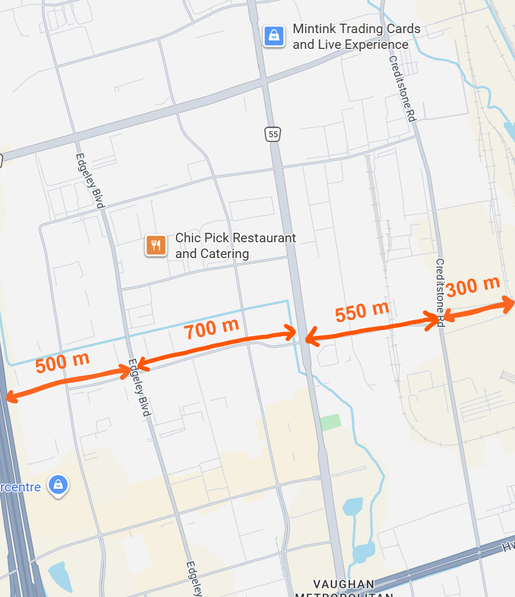

Which Route is Best?
This is not an official study, it is entirely independent.
The industrial park (known as Vaughan Business Park) north and east of Vaughan Metropolitan Centre station is (from what I have seen) a strong generator of bus ridership in the area. As part of their 2026 Annual Transit Plan, York Region Transit (YRT) is proposing a routing change in the area. As part of the change, a new weekday daytime service will be introduced between Vaughan Mills Mall and Vaughan Metropolitan Centre Station via Creditstone Road, supplementing the existing peak-only Edgeley and full-service Jane routes. Is this the best plan for the area?
Probably not.
Area and Scope
The study area is shown below, comprising the areas of the Vaughan Business Park south of Vaughan Mills Mall. The macroscopic model used assumes all employees closest to the existing frequent route on Jane Street will use it, while every other potential rider will use it if the perceived time to Vaughan Metropolitan Centre is shortest, as based on the TTC's service standard . The microscopic model will attempt to model individual behaviour and is currently under development. Both models are being written in C++.
Macroscopic Model
Further description of the model can be found here.
This model was built with a number of assumptions to simplify the situation, allowing it to be run on the fly and test many different cases. I treated this code like the solution to a programming problem, the type often seen in programming competitions (unrelated example problem).
The model assumes three possible routes. The 2nd (middle) route already exists (meant to model route 20 - Jane) and will be kept. The routes to the left and right may not exist and the model may decide those routes should not exist (meant to model the proposed routes of 29 - Edgeley and 26 - Maple through the study area).
In a theoretical case, with routes spaced 1000 metres from each other and no extra distance walking to bus stops is needed (apart from horizontal distance), the parallel route 1000 metres away becomes necessary around when there are enough buses to run it around every 11 minutes, at which point the most efficient bus allocation is running both routes every 20 to 21 minutes. At the point when having only one route is no longer the most efficient option, having a less frequent secondary route is always better as long as it runs at least around every half hour.
With a shorter distance, the headway would need to be shorter to justify this. With a longer distance, the headway can be longer. The distance and number of buses required appear to be roughly but probably not exactly proportional to each other. However, at longer distances (e.g. 2000 metres) people may not choose transit. I am unsure of how to work such a situation into my model and would advise avoiding looking at distances longer than around 1,500 metres.
The Edgeley route is around 700 metres away from Jane, while Creditstone is around 550 metres away. However, Edgeley has a larger catchment area due to the railway terminal east of Creditstone Road. Both the routes on Creditstone and Edgeley are too infrequent to be the most efficient option, though there is likely an additional 200-400 metre walk to any bus stop. The two less-frequent routes certainly come less frequently than they would under an "efficient" option. However, route 20 - Jane is already well above the 20-minute service level so the total number of buses would likely merit the more minor routes.
A finer model
Further description of the model can be found here.
This model simulates individual decisions on which route to take (bus routes and walking) for a random sample of passengers and outputs the ridership for bus routes going through the area. This model relies on an assumption that with similar land use throughout the study area, the area of each building is relative to employee density. Buildings with 3 more more storeys get a multiplier smaller than their number of floors (as these tend to be office buildings where people are probably more likely to drive). If you would like to see the areas and distances used for this, see this map . Additionally, it assumed the same percieved walking and waiting times assumed by the TTC and in my earlier macroscopic model.
You can find the code I have used to run the model here. Expect further information about the model in mid-June. The model is based on areas and distances determined by the map, existing schedules on the YRT routes in the area, and various speed assumptions for the new route on Creditstone ranging from 17 to 30 km/h (and one 50 km/h case made mostly as a joke). All cases tested used a sample size of 20,000 to ensure the margin of error would be very small.
The results indicate a route along Creditstone would get very little ridership. Even if the route ran at 50 km/h, ridership is expected (by my model) to be at most a third of the ridership on Edgeley. During midday hours, running a route on Creditstone instead of Edgeley would (according to my model) decrease ridership in the area by around 5% and increase ridership on the busy 20 - Jane bus by over 10%. Interestingly, improving the 20 - Jane would be more effective at saving area commuters' time than a new Creditstone midday service, but not as effective as a new Edgeley service.
More to come.

Why does Creditstone have less ridership potential than Edgeley?
Creditstone Road runs directly west of the CN MacMillan Yard, preventing any additional industrial buildings from being built any more than 200 to 300 metres east of Creditstone. The frontage of these buildings is only around 600 metres away from Jane Street at most. By comparison, Edgeley Bolevard is 700 metres west of Jane Street and there is an additional 500 metres before it reaches Highway 400. This gives Edgeley an 850-metre cross-section for which it would be the nearest street with a bus route. To compare, this number is around 550 metres for Creditstone. Additionally, the Creditstone route does not get to Creditstone Road until 750 metres north of the SmartVMC bus terminal. This further reduces the area from which ridership on the route can br drawn.
Creditstone has fewer intersections than Edgeley does, which will affect the number of stops on the route. YRT does not like using mid-block stops due to them typically necessitating jaywalking. This applied to Credistone means that there are fewer places where stops would fit causing longer walks to a Creditstone route, one which is already just over 500 metres away from Jane Street.
Jane BRT
Within the study area, the Jane BRT study is ongoing. My model can ntt account for the impacts of stop spacing on speed (one thing which could potentially be an issue). The project team is using an assumption of 30 km/h for the BRT. I am mildly skeptical of this assumption given other Viva lines are not scheduled this fast, and on corridors like this one I would expect all stops to generate ridership during peak hours due to employment demand (while other intersections would generate demand for the local 20 - Jane). However, the existing 320 - Jane Express service is running through the study area much faster than one would expect:
AM rush: 26 km/h NB, 29 km/h SB
PM rush: 24 km/h (both directions)
The above speeds include all turns, such as those into bus terminals which will be avoided by the BRT. This will likely result in higher speeds, potentially offsetting the effect of shorter stop spacing. A member of the project team additionally informed me that York Region would like to implement better signal priority to prevent low speeds such as those seen on Line 6 Finch West (which was specifically mentioned). These speeds reduce significantly immediately north of the study area particularly during the PM rush, so the Jane BRT will have much greater benefits north of Rutherford rather than south of it.
I can, however, test different scenarios to determine how differences in speed impact the improvements brought by the BRT. To do this, I will need to test a few different speeds (e.g. 20, 25, 30), as well as some different frequencies for 20 - Jane (whose service would likely be reduced). I think a scenario closer to 77 - Highway 7 (15-20 minutes at peak) is most likely given what kind of areas 20 - Jane runs in, though I will test lower frequencies as well.
Since the walk from the Jane BRT's Highway 7 station is expected to be outside (rather than in a tunnel like at SmartVMC Terminal), I applied the bus travel time to the nearest subway station entrance (Assuming a 25 km/h speed) as a penalty.
While a member of the project team (who is familiar with my work) approached me about doing this, this was done out of the team member's own volition and my work will have no impact on this project.
Preliminary Recommendation
I think it is clear that whether or not a Creditstone route is worthwhile during rush hours, Edgeley likely has more ridership potential than Creditstone. If only one road is to have a midday service, it should be Edgeley. This could be achieved by running the existing 26 during midday hours, with the newly-proposed route running during rush hours only. I would prefer this over running the proposed Route 29 - Edgeley due to its lack of connectivity to Maple GO station, and the rest of its route having a similar problem to the Creditstone routing.
Additionally, rush hour service seems to be much more effective with an improved service on Edgeley. To ensure resources on that corridor, which has a much greater area of service than the Creditstone corridor, are used most efficiently, I would strongly recommend a blended schedule: Running every 20 minutes during the AM rush and every 21 minutes during the PM rush. This allows the existing bus allocations on Routes 29 - Edgeley and 26 - Maple while ensuring the best service on Edgeley. In the event the service north of Rutherford on Route 29 requires a much different frequency, alternatives should be considered (perhaps an additional vehicle on one route to ensure the expected frequency is met).
For further commentary on each individual case tested, see the test cases document.
Could these models be used elsewhere?
These models are suitable for areas with very similar land use where the vast majority of travellers are going to one point (Point 0, typically a subway station). This model could be modified to specify more zero-distance points, which may be useful in other areas (e.g. evaluating whether an extension of the Pharmacy North bus would effectively serve commuters to the industrial park north of Steeles).
The business park north of Vaughan Metropolitan Centre is a great area for such a model due to the aforementioned subway station as well as being disconnected in the east-west direction due to Highway 400 to the west and the CN Rail yard to the east. The aforementioned area near Pharmacy Avenue has a railroad in the east, though it is a much lesser wall than the CN yard is.
Last updated: 06/19/2026